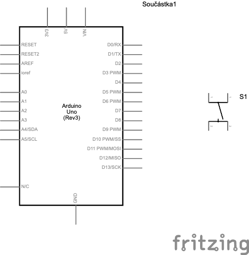
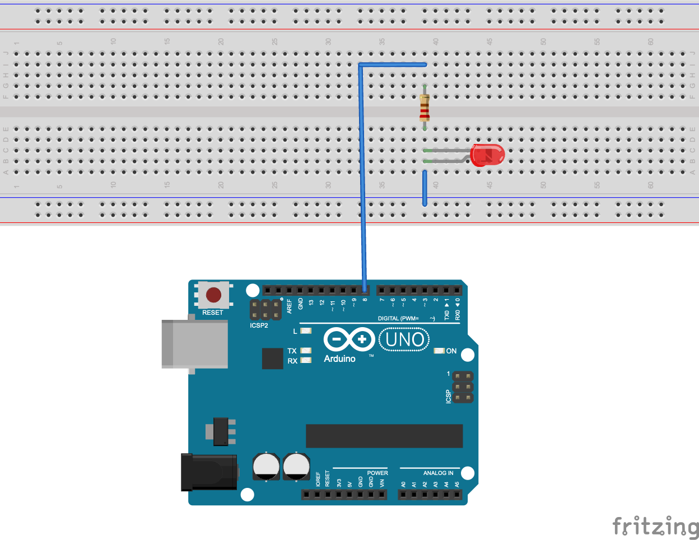
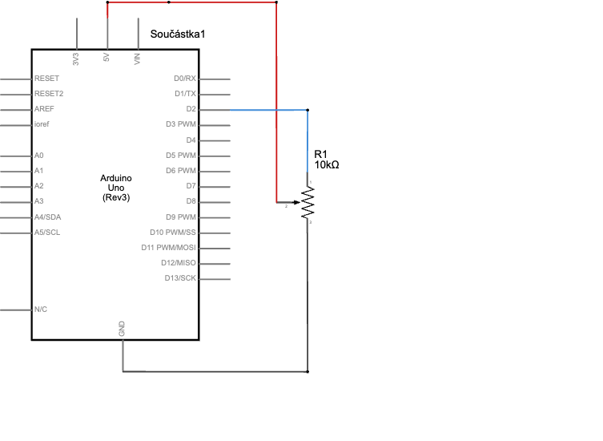
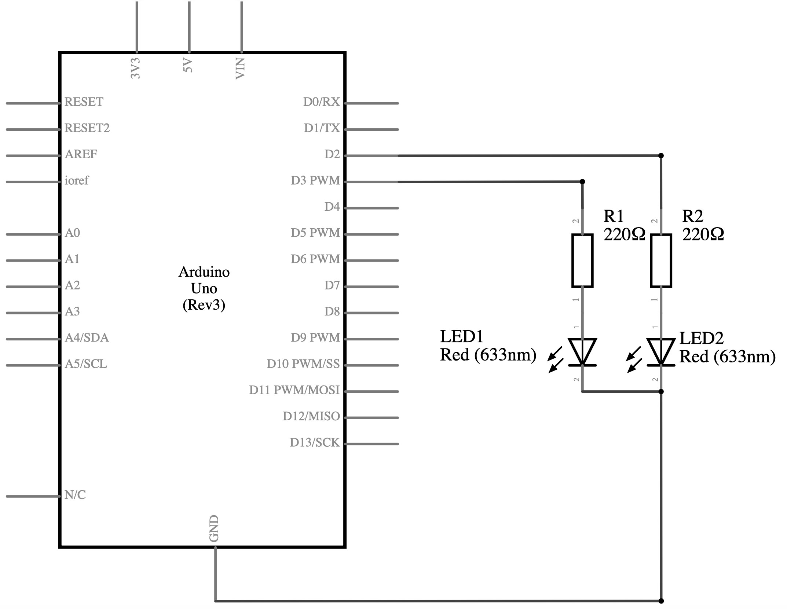

01
K čemu slouží funkce
OVĚŘENÍ ZNALOSTÍ · OSOBNÍ VARIANTA
Ostrý test – Arduino
Jeden osobní test s 9 náhodně vybranými otázkami.
Příprava osobního testu
Vyplňte jméno a datum testu. Poté klikněte na Vygenerovat test. Jednou vybrané otázky zůstanou uložené v tomto prohlížeči i po obnovení stránky.
TEST · OSOBNÍ VARIANTA
Zadání testu
Po vygenerování se zobrazí vašich 9 otázek. Stejnou variantu můžete znovu otevřít a vytisknout.
Nejprve vyplňte jméno a datum.
PRAXE · ARDUINO · TEST 1
Test 1 – Arduino
Jméno:
Datum:
02
K čemu slouží funkce
K čemu slouží funkce
void loop()
a jak často se její kód opakuje?
03
Katoda je delší vývod LED. Připojuje se přes rezistor ke kladnému napětí nebo k digitálnímu pinu Arduina.
04
Anoda je kratší vývod LED. Připojuje se k zápornému pólu zdroje nebo na GND.
05
digitalWrite(led, HIGH); // vypnutí LED
06
digitalWrite(led, LOW); // zapnutí LED
07
Jaký příkaz v Arduinu pozastaví program na zadaný počet milisekund?
08
K čemu slouží příkaz
K čemu slouží příkaz
Serial.println()
?
09
Nakreslete schématickou značku LED diody.
Schéma si můžete nakreslit na papír. Při tisku testu je pod otázkou prostor pro doplnění.
10
Dokreslete zapojení tlačítka s vnitřním pull-up rezistorem.

Schéma si můžete nakreslit na papír. Při tisku testu je pod otázkou prostor pro doplnění.
11
U vnitřního zapojení tlačítka platí: stisknuté tlačítko = LOW, nestisknuté tlačítko = HIGH.
12
Popište funkci potenciometru.
13
Co je špatně v následujícím nastavení tlačítka? Tlačítko je zapojeno mezi D2 a GND bez externího rezistoru.
UKÁZKA PROGRAMU · ARDUINO C++
pinMode(2, INPUT);
14
Je LED dioda na nepájivém poli zapojena správně? Prohlédněte si původní schéma a odpovězte na všechny body:
Je LED dioda na nepájivém poli zapojena správně? Prohlédněte si původní schéma a odpovězte na všechny body:
1. Posuďte, zda by zapojení fungovalo, a zdůvodněte proč.
2. Určete konkrétní chybu nebo chyby v zapojení.
3. Vysvětlete, jak jsou elektricky propojené kontakty nepájivého pole a jak to ovlivňuje zobrazený obvod.
4. Popište, jak byste zapojení opravili, aby bylo možné LED bezpečně ovládat z Arduina.

15
Jaký rozsah hodnot vrací příkaz
Jaký rozsah hodnot vrací příkaz
analogRead()
na Arduino Uno?
16
Je potenciometr správně zapojený? Pokud ne, nakreslete správné zapojení.

Schéma si můžete nakreslit na papír. Při tisku testu je pod otázkou prostor pro doplnění.
17
Je kód napsaný dobře ve srovnání se zapojením? Pokud ne, napište, kde je chyba.
UKÁZKA PROGRAMU · ARDUINO C++
const int LED1 = 13;
const int LED2 = 6;
void setup() {
pinMode(LED1, OUTPUT);
pinMode(LED2, INPUT);
}
void loop() {
// Rozsvítí LED2, zhasne LED1
digitalWrite(LED1, HIGH);
digitalWrite(LED2, LOW);
delay(1000);
// Zhasne LED1, rozsvítí LED2
digitalWrite(LED1, LOW);
digitalWrite(LED2, HIGH);
delay(1000);
}
18
Co udělá program? Jak dlouho bude LED svítit? Jak dlouho bude zhasnutá?
UKÁZKA PROGRAMU · ARDUINO C++
digitalWrite(5, HIGH);
delay(5000);
digitalWrite(5, LOW);
delay(3000);